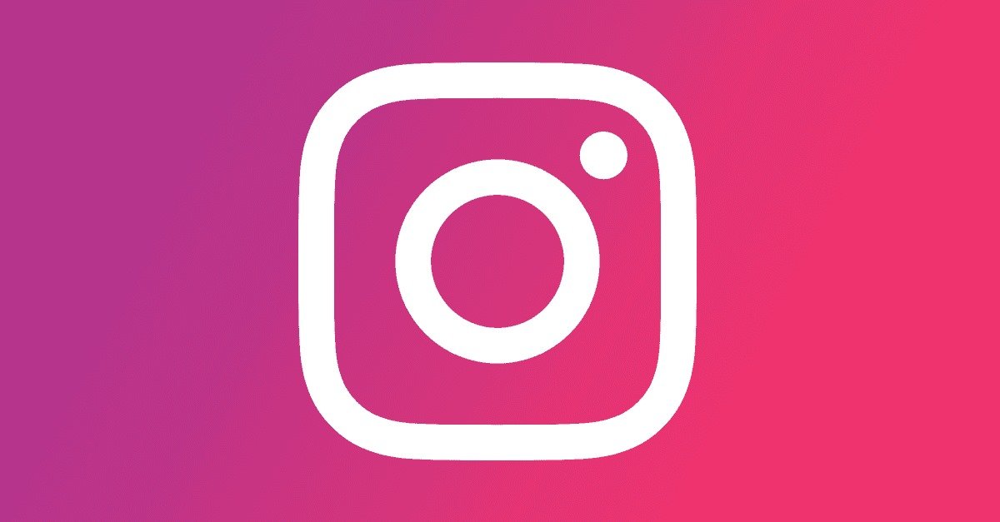

Media plays a powerful role in shaping public opinion and political behavior. The way news is presented, and the platforms through which it is consumed, directly influence how people perceive issues, form opinions, and ultimately cast their votes. This page explores the impact of media, with a focus on traditional news outlets and the growing role of social media.
Traditional Media Influence
Traditional media outlets, such as television networks and newspapers, have long been key players in shaping political discourse. The way they report on events or frame issues can significantly influence public opinion.
One prominent example is Fox News:
According to several studies, Fox News viewers are more likely to support the Republican Party than those who use another source for their news. This happens because of the way issues are presented. Fox News chooses a certain point of view or presents issues in a certain light, which can lead viewers to develop a political opinion that favors Republicans. The research also shows that the influence of Fox News is particularly evident in election years when the political mood in the US is very tense.
Social Media
Social media is an important source of information these days. Even if not all informations are true. Often false news are deliberately spread or things are misrepresented. The goal is usually the same, to steer people in a certain political direction. Compared to traditional media, social platforms are less regulated, which facilitates the dissemination of such content. These posts can influence public opinion or even influence entire elections. In past US elections, social media played an important role in persuading many Americans to potentially vote against their own rights.
